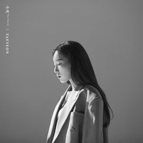

Taeyeon
모든 자료 출처 : http://taeyeon.smtown.com/
Profile
“안녕하세요~ 소녀시대의 꼬꼬마 리더, 태연입니다!”
| Name | 김태연 (Kim Taeyeon) |
| Birth | 1989. 3. 9. |
| Blood Type | A |
| MBTI | INFJ |
| Entertainment | SM Entertainment |
| Position | SNSD | Leader & Main Vocal |
| Nick Name | 탱, 탱구, 그아탱, 믿듣탱, 킹태연, 꼬꼬마 리더, 우최리, 종이인간 |
Album
TAEYEON Single Happy
소녀시대 태연(에스엠엔터테인먼트 소속)이 새 싱글 ‘Happy’를 전격 공개, 팬들에게 특별한 선물을 선사한다. 이번 신곡 ‘Happy’는 올드스쿨 두왑(doo-wop)과 알앤비를 현대적인 사운드로 재해석한 알앤비 팝 장르 곡으로, 사랑하는 사람과 함께 하는 시간 속에서 느끼는 따뜻하고 포근한 설렘과 행복을 담은 가사가 인상적이다. 태연은 앞서 발매한 정규 2집 ‘Purpose’로 각종 음원, 음반 차트 1위를 기록했을 뿐만 아니라, 리패키지 앨범 역시 아이튠즈 톱 앨범 차트에서 25개 지역 1위로 한국 여자 솔로 가수 앨범 사상 최다 1위를 기록하며 ‘믿듣탱’ 파워를 입증한 만큼, 이번 신곡으로 보여줄 활약이 더욱 기대를 모은다.
TAEYEON The 2nd Album Purpose
앨범명 ‘Purpose’는 태연에게 음악이 가장 중요한 삶의 방향성이자 목표 중 하나라는 의미를 담아, 태연의 깊은 음악 감성과 풍성한 보컬 매력을 만나기에 충분하다. 특히, 태연은 소녀시대 활동뿐만 아니라 솔로 가수로서도 발표하는 곡마다 국내외 음악 차트 1위를 석권하는 등 많은 사랑을 받고 있으며, 올해 3월 싱글 ‘사계’, 7월 ‘호텔 델루나’ OST ‘그대라는 시’로 연속 히트를 기록함은 물론, JTBC 음악 예능 ‘비긴어게인3’를 통해 다채로운 장르의 음악을 완벽 소화하는 만능 보컬리스트로서의 면모를 다시 한번 확인시켜준 만큼, 새 앨범에 대한 높은 관심이 기대된다.

TAEYEON Single 사계
‘믿고 듣는 보컬퀸’ 소녀시대 태연(SM엔터테인먼트 소속)이 새 싱글 ‘사계’로 깊은 감성을 선사한다. 얼터너티브 팝 장르의 타이틀 곡 ‘사계 (Four Seasons)’와 발라드 수록곡 ‘Blue’ 등 태연의 명품 보이스를 만끽할 수 있는 2곡이 수록되어 있어 글로벌 음악 팬들을 귀를 매료시킬 전망이다.또한 태연은 ‘I’, ‘Rain’, ‘11:11’, ‘Fine’ 등 발표하는 곡마다 각종 음원 및 음반 차트 1위를 석권함은 물론, 매력적인 음색과 뛰어난 가창력으로 다채로운 장르의 곡을 완벽하게 소화해 ‘독보적 보컬리스트’로 자리매김 한 만큼, 이번 신곡을 통해 들려줄 새로운 목소리도 기대를 모은다.
TAEYEON The 1st Album ‘My Voice’
태연의 첫 정규 앨범 ‘My Voice’는 태연의 뛰어난 보컬 실력을 바탕으로 탄생한 타이틀 곡 ‘Fine’을 비롯해 음반에만 특별 수록되는 보너스 트랙 ‘기억을 걷는 시간’까지, 팝 발라드, 팝 R&B, PB R&B 등 새롭고 다채로운 장르의 총 13트랙으로 구성되었다. 태연은 일렉트로닉 기타 선율이 인상적인 미디움 템포의 팝 곡 ‘I’, 재즈의 소울풀한 느낌이 돋보이는 미디움 템포 곡 ‘Rain’, 트로피컬 하우스 장르의 팝 곡 ‘Why’, 팝 발라드 장르의 ’11:11’ 등 다양한 장르의 음악을 특유의 부드럽고 매력적인 음색으로 완벽하게 소화하며 히트 행진을 기록한 바 있어, 첫 정규 앨범 역시 많은 사랑을 받을 것으로 보인다.
Music Video
TAEYEON's new single "Happy" is out! #태연 #Happy #Taeyeon # MV
TAEYEON 태연 'Happy' MV ℗ SM ENTERTAINMENTInterview
 영상 보러가기
영상 보러가기
Q1. 서가대 대상 축하해!
- 고마워~~ 난 정말 내가 받을 줄 몰랐어... 수상 소감을 어설프게 하긴 했지만... 너무 당황해서 그랬다는 거 ㅋ
Q2. 그동안 어떻게 지냈어?
- 그동안 꾸준히 앨범 + 앞으로 있을 일본 앨범 준비... 무튼 계속 일하고 있던 것 같다 ㅋ
Q3. 지금 뭐하고 있었어?
- 뮤비 촬영하고 있었고... 이제 끝! 난 이제 이거 마치고 퇴근할 거다. 지금 신곡 컨셉 물어보려고 그랬지?! 신곡은 러블리하고 해피한 신곡 ㅎㅎ 들으면 기분 좋아질 것
Q4. 타이틀 곡을 선정하는 본인만의 기준이 있어?
- 딱 들었을 때 기분 좋은 노래... 희열이 느껴진다거나 짜릿함이 느껴진다거나 ㅋㅋ 느낌 있는 곡이 끌리더라고
Q5. 목이 안 쉬는 비결은?
- 타고나야... ㅋㅋㅋ 올바른 발성법을 한 번 찾아보면 어떨까? 스트레칭 고고
Q6. 공연하고 싶은 특별한 장소 있어?
- 외국에서 버스킹 해 봤으니 국내 버스킹을 해야하나? ㅋ 1도 생각한 적 없다. 아주 신선한 질문이었으... 우리 집에 초대.... 하는 건 좀 역시 아니지. 한국에서 버스킹?
Q6. 제로는 뭐하고 있어?
- 지금 엄마랑 편하게 쉬고 있을거야 ㅎㅎ
Q7. 촬영 끝났는데 이제 뭐할거야?
- 이제 얼른 집에 가서 깨끗하게 씻으려구... ㅎㅎ; 하루종일 이리저리 뒹굴었기 때문에... 얼른 씻고 내일을 위해 푹 자겠어.
Q8. 반말 인터뷰 어땠어?
- 너.무.좋.다 앞.으.로.도 계.속 이.렇.게 하.자 ㅋㅋㅋㅋ
Q9. 마지막으로 팬들에게 하고 싶은 말 있어?
- 먼저 이렇게 반말로 말을 하니까 되게 재밌다 ㅋㅋ 친근감 있네 ㅎ... 새로 나올 신곡 HAPPY 많이 들어줬으면 좋겠고, 굉장히 기분 좋아지는 곡이니까 항상 늘 옆에 따라다니는 그런 곡이었으면 좋겠어. HAPPY를 듣고 HAPPY 하렴 ㅋㅋㅋ 안녕~